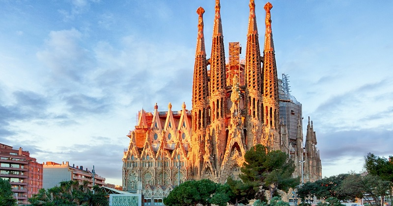

Alhambra, Granada
A Alhambra, localizada em Granada, Espanha, é uma das jóias arquitetônicas mais bem preservadas do mundo islâmico medieval. Construída no século XIII, esta fortaleza e palácio mourisco encanta os visitantes com sua arquitetura de tirar o fôlego, jardins exuberantes e rica história.
Basílica da Sagrada Família
Templo Expiatório da Sagrada Família, também conhecido simplesmente como Sagrada Família, é um grande templo católico da cidade de Barcelona, Catalunha, Espanha, desenhado pelo arquiteto catalão Antoni Gaudí, e considerado por muitos críticos como a sua obra-prima e expoente da arquitetura modernista catalã.
La Graciosa (Ilha)

A ilha La Graciosa, em conjunto com os ilhéus de Montaña Clara, Roque del Este, Roque del Oeste e Alegranza, constitui o chamado "arquipélago Chinijo", um conjunto de pequenas ilhas sitas no extremo nordeste das Canárias.